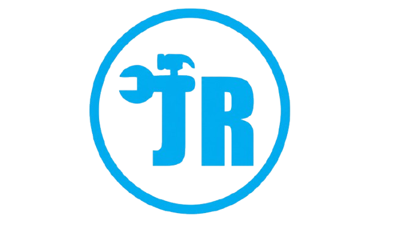

Reparación de Calentadores
Mantenimiento preventivo y correctivo de calentadores a gas y eléctricos. Diagnóstico preciso.
Solicitar Técnico →
REPARACIONESMantenimiento preventivo y correctivo de calentadores a gas y eléctricos. Diagnóstico preciso.
Solicitar Técnico →Limpieza profunda, calibración de llamas y cambio de repuestos para estufas domésticas e industriales.
Solicitar Técnico →Detección de fugas, reparación de tuberías principales, instalación de grifería y acometidas de agua.
Solicitar Técnico →Instalación de acometidas, tableros de distribución, iluminación exterior y reparación de fallos eléctricos.
Solicitar Técnico →En Reparaciones JR consolidamos nuestra trayectoria como la solución líder a domicilio para todo lo relacionado con la optimización, seguridad y reparación de sistemas de agua caliente y redes de gas licuado o natural. Nos especializamos en la reparación e instalación de calentadores de agua de todas las marcas y referencias del mercado (tanto de acumulación como de paso continuo, eléctricos o a gas), corrigiendo fallas críticas como pérdida de presión, apagados repentinos, problemas en los termostatos o códigos de error en pantallas digitales. Entendemos que un calentador defectuoso altera por completo la rutina de tu hogar o comercio, por lo que disponemos de técnicos expertos equipados con herramientas de diagnóstico de última tecnología para garantizar un servicio técnico preventivo y correctivo oportuno, transparente y con repuestos 100% originales.
Nuestra cobertura está estratégicamente diseñada para brindar una respuesta inmediata en toda la zona sur de Medellín y sus municipios aledaños. Atendemos con total rapidez solicitudes urgentes en Envigado, Itagüí, Sabaneta, La Estrella y Caldas, desplazándonos hasta tu residencia, apartamento o local comercial sin demoras. De igual manera, contamos con atención prioritaria en el sector de Belén, abarcando todas sus urbanizaciones y zonas residenciales. No nos limitamos únicamente a los calentadores; nuestro equipo está plenamente capacitado para el diseño, revisión y adecuación de redes de gas domésticas y comerciales, asegurando el cumplimiento estricto de las normativas vigentes, la detección temprana de fugas imperceptibles y la correcta conexión de estufas, hornos y cubiertas para evitar accidentes y optimizar el consumo mensual de energía.
Sabemos que la seguridad de tu familia o negocio es lo más importante al manipular gasodomésticos. Por ello, cada servicio de mantenimiento e instalación que realizamos en el sur del Valle de Aburrá se ejecuta bajo los más altos estándares de calidad, ofreciendo revisiones técnicas honestas, dictámenes claros y garantías reales por escrito en cada labor efectuada. Ya sea que necesites una instalación desde cero en un proyecto nuevo en La Estrella o Sabaneta, un mantenimiento preventivo anual en Envigado o Itagüí, o resolver una emergencia con tu calentador en Belén o Caldas, en Reparaciones JR estamos listos para atenderte con el profesionalismo que nos caracteriza. Agenda tu visita técnica directamente a través de nuestra línea de atención y comprueba por qué somos la opción preferida de cientos de usuarios en la región.
Llegamos rápidamente a tu hogar o comercio en todo el sur del Valle de Aburrá y sectores clave de Medellín.
Disponemos de técnicos motorizados estratégicamente ubicados para garantizar el menor tiempo de espera en reparaciones de calentadores y redes de gas.
¿Estás en uno de estos sectores? ¡Agenda tu revisión ahora mismo!
Consultar DisponibilidadLa honestidad y la puntualidad son nuestra mejor carta de presentación.
"Mi reparación fue en Sabaneta... El señor Julián una persona muy cálida, respetuosa, honesta y puntual. Muchas gracias."
"Muchas gracias por la instalación del calentador acá en Itagüí."
"Hola, muchas gracias, el calentador quedó funcionando perfectamente acá en Belén Loma de los Bernal."